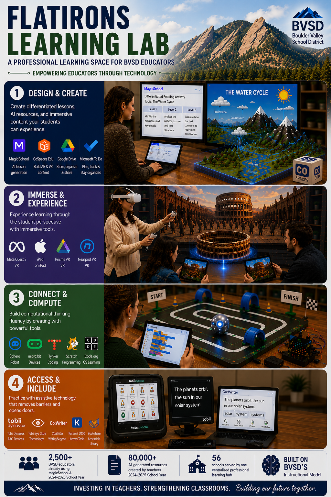

From Concept to Proposal
Earlier this year I wrote about the idea of a teacher-facing technology learning lab in BVSD, introduced the concept, and made the case for why it was needed. This is the full proposal. The budget has been refined from $60,000 to $50,000, the structure has moved from six general stations to four specific learning zones tied directly to BVSD's five-phase Instructional Model, and the programming plan has been fully developed with cohort stipends, equity access, and a Year 2 expansion built in. In the 2024-2025 school year, nearly 2,500 BVSD educators used MagicSchool AI to generate more than 80,000 items, from lesson plans to student support resources and translations. That kind of organic adoption is encouraging, but a Colorado Department of Education survey from April 2026 found that roughly half of Colorado teachers feel unprepared for where AI in education is headed. Using a tool and integrating it with intention are not the same thing, and right now there is no structured professional learning pathway bridging that gap. This proposal requests $50,000 to convert an existing room at the BVSD Education Center into the Flatirons Learning Lab, a teacher-facing professional learning space serving educators across all 56 schools.

Why This Instead of What Already Exists
The proposal addresses a specific gap that existing options do not fill. MyPassport offers online modules teachers can complete on their own, and that works for building general awareness. It does not work for getting comfortable with a VR headset, practicing with an AAC device before a student needs it, or sitting with a colleague from a different school to figure out how to actually use MagicSchool in a math lesson. A centralized physical space with dedicated facilitation and real hardware creates conditions for the kind of learning that changes what happens in classrooms.
Other approaches have real constraints at the district level. Building-level technology coaches would exceed $50,000 and could not be distributed equitably across 56 schools. Mobile labs improve hardware access but do not build structured time into the professional learning calendar. Folding technology into existing PD days means competing with literacy, math, and data-driven instruction priorities that are already fully scheduled. Research on professional learning is consistent: one-time sessions and passive formats produce low adoption rates, while sustained, hands-on learning is what actually shifts practice over time (Amemasor et al., 2025). Saint Vrain Valley Schools, a nearby Front Range district, has operated a dedicated teacher technology space since 2018 and used it to scale an AI professional development program that reached over 300 educators in its first year (Saint Vrain Valley Schools, 2023).
How It Would Work
In Year 1, every session is scheduled and facilitated. There are six Expert Presenter sessions throughout the year, three extended two-hour sessions on district PD days, and a 60-minute introduction built into August new teacher orientation. Any principal across the district can nominate a teacher from their building to attend. All participation counts toward MyPassport professional development hours.
Six Pilot Cohort teachers, each with a $1,000 stipend, will go through the full programming and bring feedback from their schools into Year 2 planning. A $500 geographic equity pool covers teachers from Nederland, Gold Hill, and Jamestown. Building-wide rotations are planned for Year 2 based on what the first year shows.
An Invitation to Connect
I wrote this proposal as a 4th grade teacher who sees the gap every day. Teachers in my building are curious, motivated, and already trying things without support. The Flatirons Learning Lab is an attempt to give that curiosity somewhere structured to go.
If you work in educational technology, professional learning, or district leadership, or if you are a teacher who recognizes this problem from your own context, I want to hear from you. What has worked in your district? What would you push back on here? Reach out.
References
https://doi.org/10.3389/feduc.2025.1541031
https://www.bvsd.org/about/news/news-article/~board/district-news/post/student-perspectives-on-ai-how-technology-is-shaping-learning-and-the-future
https://www.kunc.org/news/2026-04-17/new-survey-reveals-half-of-colorado-teachers-use-ai-tools
https://www.svvsd.org/2023/10/27/st-vrain-valley-schools-empowers-educators-with-exploration-ai-program/
Join the conversation
Leave a Comment or Connect